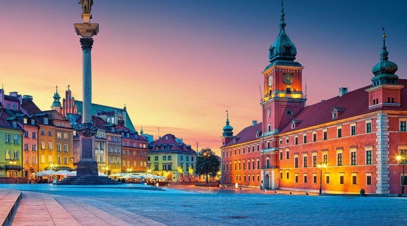
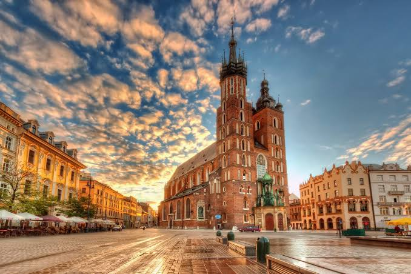
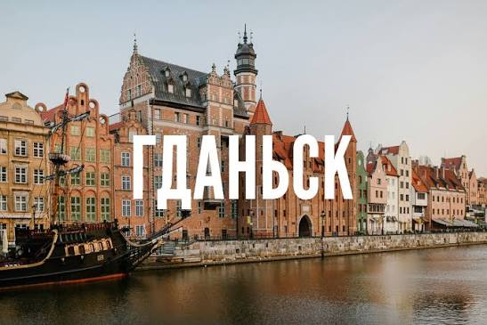

Откройте для себя богатое историческое наследие, завораживающую архитектуру и секреты главных культурных центров Польши.
Изучить города
Динамичный мегаполис, сочетающий футуристические небоскребы и бережно восстановленный исторический центр.

Древнее сердце Польши. Город королей, грандиозных замков и неповторимой средневековой ауры.

Морские ворота страны, славящиеся свободолюбивым духом, северной готикой и лучшим в мире янтарем.
В Польше находится замок Мальборк — самый большой кирпичный замок в мире по площади территории, построенный когда-то крестоносцами.
Это старейший первобытный лес Европы, на территории которого живет крупнейшая мировая популяция тяжелейших сухопутных животных континента — зубров.
Польша подарила миру 19 лауреатов Нобелевской премии, среди которых великая женщина-ученый Мария Склодовская-Кюри.